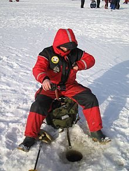

☛ MEŠKERĖS virš 4000 rūšių - Superlaimikis.lt | Žūklės reikmenys
Dėmesio! Dėl karantino DPD kurjeriai atlikinės bekontaktį pristatymą ir nepriims atsiskaitymų grynais!
Open Menu Žūklės reikmenys Meškerės Meškerės spiningavimui Meškerės dugninei žūklei Karpinės meškerės Teleskopinės meškerės Meškerės jūrinei žūklei Match meškerės Meškerės muselinei žūklei Ritės Ritės karpių žūklei Ritės spiningavimui Ritės plūdinei žūklei Ritės dugniniai žūklei Ritės jūrinei žūklei Multiplikatorinės ritės Valai ir pavadėliai Pinti valai Fluorokarboniniai valai Monofilamentiniai valai Pavadėliai Karpiniai valai Museliniai valai Dirbtiniai masalai Guminiai masalai Sukriukės Blizgės Vobleriai Pilkeriai Sistemėlės Hibridiniai masalai Minkšti jūriniai masalai Jūrinės sistemos Viskas karpių žūklei Meškerės Ritės Valai - pavadėliai - sistemėlės Valai Pavadėliai - sistemėlės Kėdės - gultai, stalai Stovai - laikikliai Signalizatoriai Palapinės - užuovėjos Įrankiai - aksesuarai Kabliukai Svareliai PVA gaminiai Šėryklos Įrankiai Svarstyklės Segtukai - suktukai - žiedeliai Plūdės - markeriai Graibštai Dėklai - kuprinės - kita Karučiai Svėrimo krepšiai - Matai Būtiniausi reikmenys Smulkios detalės,šėryklos Suktukai, segtukai ir žiedeliai Stoperiai, vamzdeliai ir kita Šeryklos Kabliukai, galvakabliai Trišakiai Dvišakiai Offsetiniai Paprasti Galvakabliai Svareliai Švieselės Plūdės Slankiojančios Stacionarios Dėžės, dėklai, kuprinės ir krepšiai Dėžės Dėžutės Dėklai meškerėms Kuprinės, krepšiai Dėklai ritėms, masalams ir sistemėlėms Įrankiai, graibštai, sieteliai Sieteliai ir bučiai Peiliai - šakutės Graibštai, jų priedai Stoveliai meškerėms Replės ir žirklės Žiodikliai - kabliai Skambučiai Aksesuarai Akiniai Suvenyrai Kiti įrankiai Atsarginės dalys, tepalai ir remonto komplektai Jaukai, baltyminiai masalai Jaukai Boiliai Peletės Kvapai Kiti papildai Apranga Žieminiai kostiumai Apatiniai rūbai Kepurės, kaukės Pirštinės Kelnės Džemperiai, megstiniai Kojinės Gelbėjimosi liemėnės Striukės Batai Šortai Bridkelnės, braidymo batai Vasariniai, Demisezoniniai kostiumai Elektronika Echolotai ir priedai Kibimo signalizatoriai Žibintai Svarstyklės Baterijos, elementai ir akumuliatoriai Valtys ir turizmo reikmenys Valtys Kuprinės turizmui Kėdės Palapinės Miegmaišiai Termosai Sulankstomos Lovos Stalai Lempos, įrankiai ir kita Valčių varikliai Akumuliatoriai Priedai Valčių priedai Inkarai Žiūronai - kameros Iškylavimo rinkiniai Žieminei žūklei Ritės poledinei žūklei Žieminės meškerės Sargeliai Valai poledinei žūklei Žieminiai masalai Balansyrai - Švytuoklės Žieminės Blizgutės Ledo grąžtai, jų priedai Dėžės žiemai Žieminės palapinės, užuovėjos Vėliavėlės poledinei žūklei Žieminės šėryklėlės Smaigai Rogutės Rinkiniai Ledo kirtikliai Apie mus Pristatymas Dovanų kuponas lt eninfo@superlaimikis.lt
+3706 1118058
Registracija Prisijungti Toggle navigation Žūklės reikmenys Meškerės Meškerės spiningavimui Meškerės dugninei žūklei Karpinės meškerės Teleskopinės meškerės Meškerės jūrinei žūklei Match meškerės Meškerės muselinei žūklei Ritės Ritės karpių žūklei Ritės spiningavimui Ritės plūdinei žūklei Ritės dugninei žūklei Ritės jūrinei žūklei Multiplikatorinės ritės Valai ir pavadėliai Pinti valai Fluorokarboniniai valai Monofilamentiniai valai Pavadėliai Karpiniai valai Museliniai valai Dirbtiniai masalai Guminiai masalai Sukriukės Blizgės Vobleriai Pilkeriai Sistemėlės Hibridiniai masalai Minkšti jūriniai masalai Jūrinės sistemos Viskas karpių žūklei Meškerės Ritės Valai - pavadėliai - sistemėlės Valai Pavadėliai - sistemėlės Kėdės - gultai, stalai Stovai - laikikliai Signalizatoriai Palapinės - užuovėjos Įrankiai - aksesuarai Kabliukai Svareliai PVA gaminiai Šėryklos Įrankiai Svarstyklės Segtukai - suktukai - žiedeliai Plūdės - markeriai Graibštai Dėklai - kuprinės - kita Karučiai Svėrimo krepšiai - Matai Būtiniausi reikmenys Smulkios detalės,šėryklos Suktukai, segtukai ir žiedeliai Stoperiai, vamzdeliai ir kita Šeryklos Kabliukai, galvakabliai Trišakiai Dvišakiai Offsetiniai Paprasti Galvakabliai Svareliai Švieselės Plūdės Slankiojančios Stacionarios Dėžės, dėklai, kuprinės ir krepšiai Dėžės Dėžutės Dėklai meškerėms Kuprinės, krepšiai Dėklai ritėms, masalams ir sistemėlėms Įrankiai, graibštai, sieteliai Sieteliai ir bučiai Peiliai - šakutės Graibštai, jų priedai Stoveliai meškerėms Replės ir žirklės Žiodikliai - kabliai Skambučiai Aksesuarai Akiniai Suvenyrai Kiti įrankiai Atsarginės dalys, tepalai ir remonto komplektai Jaukai, baltyminiai masalai Jaukai Boiliai Peletės Kvapai Kiti papildai Apranga Žieminiai kostiumai Apatiniai rūbai Kepurės, kaukės Pirštinės Kelnės Džemperiai, megstiniai Kojinės Gelbėjimosi liemėnės Striukės Batai Šortai Bridkelnės, braidymo batai Vasariniai, Demisezoniniai kostiumai Elektronika Echolotai ir priedai Kibimo signalizatoriai Žibintai Svarstyklės Baterijos, elementai ir akumuliatoriai Valtys ir turizmo reikmenys Valtys Kuprinės turizmui Kėdės Palapinės Miegmaišiai Termosai Sulankstomos Lovos Stalai Lempos, įrankiai ir kita Valčių varikliai Akumuliatoriai Priedai Valčių priedai Inkarai Žiūronai - kameros Iškylavimo rinkiniai Žieminei žūklei Ritės poledinei žūklei Žieminės meškerės Sargeliai Valai poledinei žūklei Žieminiai masalai Balansyrai - Švytuoklės Žieminės Blizgutės Ledo grąžtai, jų priedai Dėžės žiemai Žieminės palapinės, užuovėjos Vėliavėlės poledinei žūklei Žieminės šėryklėlės Smaigai Rogutės Rinkiniai Ledo kirtikliai Apie mus Pristatymas Dovanų kuponas Kontaktai Pagrindinis Žūklės reikmenys > Meškerės Krepšelis 0 Prekė Prekės (tuščia)Prekių nėra
To be determined Pristatymas € 0.00 VisoPirkti
Filtras
Super LaimikisMeškerės
Meškeres internetu pirkti pigiau !
Internete meškerę nusipirkti daug paprasčiau ir patogiau, nes mūsų e-parduotuvėje galite parašyti konsultantui visą parą ! Daugumai žvejų kyla klausimas: kaip išsirinkti tinkamiausią meškerę ? Patirties turintys žvejai dažniausiai nesusiduria su šiuo klausimu, tačiau pradedantysis žvejys neretai pasimeta kokį instrumentą rinktis. Norint išsirinkti tinkamą meškerę turite atsakyti į šiuos klausimus:
Ar labiausiai norite žvejoti: spiningu, plūdine, dugnine, karpine, jūrine ar museline meškere?Kokiuose vandens telkiniuose ruošiatės žvejoti ?
Kai atsakysite į klausimus, bus daug lengviau išsirinkti meškerykotį. Superlaimikis.lt internetinės parduotuvės siūlomas asortimentas labai platus, todėl išsirinkti meškerę bus tikrai paprasta. Rinktis galima iš: “ SALMO ”, “ SHIMANO ”, “ Favorite ”, “ Trabucco ”, “ Okuma ”, “ Larus ”, “ Prologic ”, “ D.A.M ”, “ JAXON ”, “ Ron Thompson ”, “ Savage Gear ”, “ Siweida ”, “ Konger ” ir dar daug kitų patikimų gamintojų meškerių. Tai kokybiškos – žvejų profesionalų patikrintos meškerės.
Jei nesate tikras kokios meškerės norite – kreipkitės į Superlaimikis.lt internetinės parduotuvės konsultantus, kurie suteiks visą aktualią informaciją apie prekes visą parą ir užtikrins, jog pasirinktos meškerės tarnaus ilgai bei kokybiškai.
Norint išsirinkti labiausiai tinkamą meškerę, pirmiausia, turėtumėte susipažinti su visomis meškerių rūšimis bei jų skirtumais. Taip pat svarbu atsižvelgti į tai, ko tikitės iš savo naujojo pirkinio, kokias žuvis ketinate gaudyti. Visi šie faktoriai turi įtakos tam tikros rūšies meškerės pasirinkimui. Mūsų asortimente siūlomos: spiningines, karpines, plūdines, dugnines (“Feeder”), jūrines, žiemines bei match tipo meškerės.
Spininginės meškerės :
Šios meškerės išskirtinės tuo, kad jų meškerykotis yra trumpesnis ir manevringesnis. Jeigu palygintume spininginius kotus su plūdinėmis, dugninėmis ar karpinėmis meškerėmis, pastebėtumėte, kad spininginės meškerės dažniausiai bus trumpesnės ir turės mažiau žiedelių valui palaikyti. Spininginės meškerės dažniausiai turės užmetimo svorį nuo 0 iki 300 gram ų, o ilgis bus dažniausiai tarp 180 ir 330 centimetr ų
Plūdinės meškerės:
Šios meškerės išskirtinės savo lengvumu ir pritaikymu žvejo rankai. Kodėl taip yra ? Nes dažniausiai žvejojant plūdine meškere žvejys stovi ir meškerės pastoviai laikomos rankose, kad nepražiopsotų kibimo. Labai patartina rinktis kuo lengvesnę meškerę, kad nepavargtumėte. Plūdinės meškerės yra trijų tipų: “Boloninės”, “Match”, “Pole”.
“Boloninės” meškerės: dar kitaip vadinamos teleskopinės. Šių meškerių ilgis varijuoja nuo 2,7 m iki net 8 m ilgio.
“Match” me škerės: Dažniausiai būna sudedamos iš kelių dalių (štekerinės). Dažniausiai būna 3 – 5 metr ų ilgio.
“Pole” meškerės: teleskopinės meškerės naudojamos sportinei mažų žuvelių gaudymui. Ilgis labai įvairus gali siekti net 12 metr ų
Dugninės meškerės “Feeder”:
Šios meškerės skirstomos pagal ilgį ir užmetimo svorį. Standartiškai Feeder’iai būna 3,30m – 4,20m ilgio ir 60g – 160 g u žmetimo svorio. Prie dugninių meškerių komplektacijos dažniausiai pridedama keletas skirtingo jautrumo viršūnėlių.
“Picker” meškerės yra dugninių meškerykočių rūšis su trumpesniu kotu bei mažesniu užmetimo svoriu ( 20g – 60g). Ilgis varijuoja nuo 2,5m iki 3,5m.
Jūrinės meškerės:
Šie kotai yra daug tvirtesni už visas kitas meškeres, būtent tuo jūrinės meškerės ir išsiskiria. Jūrinėje žvejyboje naudojami labai sunkūs masalai: nuo 200 iki 1200 gram ų, todėl pats meškerykotis turi būti itin tvirtas.
“Surf” meškerės yra jūrinių ir dugninių meškerykočių kombinacija skirta žvejybai nuo jūros kranto. Kadangi užmetimai yra daromi labai tolimi ir naudojami labai dideli svareliai, pati meškerė yra kieta ir tvirta, o ilgiai kinta nuo 3.9 iki 4.2 metro.
Karpinės meškerės:
Šios meškerės taip pat yra priskiriamos prie dugninių, nes visas žvejybos procesas vyksta ant dugno. Karpinės meškerės dažniausiai kiek trumpesnės bei tvirtesnės už “Feeder” tipo meškeres. Taip yra dėl to, kad užkibus galingam karpiui meškerė sugebėtu atlaikyti kovą su žuvimi. Ilgis ir užmetimo svoris būna įvairus.
Muselinės meškerės:
Šios meškerės turbūt labiausiai išsiskiria iš kitų tipų, nes užmetimui yra naudojamas ne masalo svoris, o valo svoris ! Masalai labai dažnai nesiekia nei vieno gramo, todėl sunkaus valo pagalba yra atliekamas užmetimas. Labai įdomus ir puikus žvejybos būdas gaudyti žuvis upėse.
PeržiūrėtiMeškerės spiningavimui
Produktų (37)
PeržiūrėtiMeškerės dugninei žūklei
Produktų (11)
PeržiūrėtiKarpinės meškerės
Produktų (6)
PeržiūrėtiTeleskopinės meškerės
Produktų (5)
PeržiūrėtiMeškerės jūrinei žūklei
Produktų (1)
PeržiūrėtiMatch meškerės
Produktų (2)
PeržiūrėtiMeškerės muselinei žūklei
Produktų (1)
1 2 3 4 Yra sandėlyje